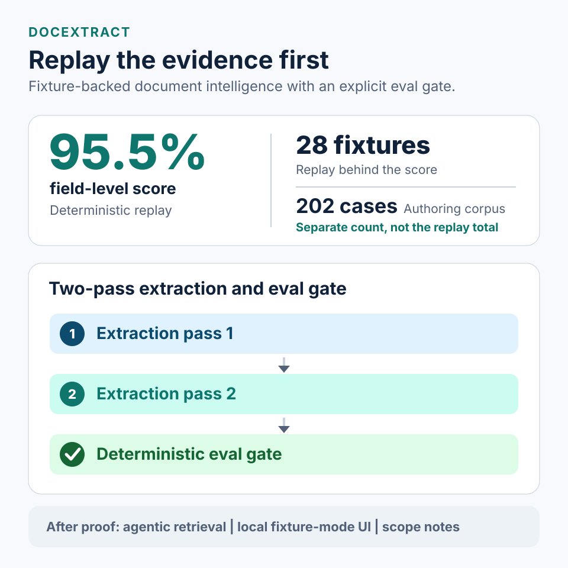

Two-pass extraction
Sonnet draft + verify; Haiku failover behind a circuit breaker. Confidence gating triggers Pass 2 only when needed.
Ship-gate discipline before features
DocExtract AI is a document-intelligence stack where a versioned eval corpus, offline replay, and variance-calibrated CI gate are the front door — then two-pass Claude extraction, pgvector search, and an agentic ReAct retrieval loop.

Every PR that touches prompts or extraction services runs
scripts/eval_offline_replay.py against committed golden responses.
The badge on the README is driven by this job — not a one-off notebook score.
autoresearch/baseline.jsondocs/portfolio-metrics.yamlUpload PDFs and images, classify with cost-aware routing, extract structured fields with a two-pass Claude pipeline, embed into pgvector, and query with a ReAct agent that streams reasoning over SSE.
Sonnet draft + verify; Haiku failover behind a circuit breaker. Confidence gating triggers Pass 2 only when needed.
Think, act, and observe loop over hybrid retrieval tools in the local demo and API.
ARQ workers, SSE job progress, optional trace exporters, and Prometheus /metrics for ops.
GraphRAG hybrid retrieval is opt-in (GRAPH_RETRIEVAL_ENABLED): regex entity graph, file-backed, not the default path.
Semantic cache is implemented but feature-flagged off and not wired into the extraction hot path.